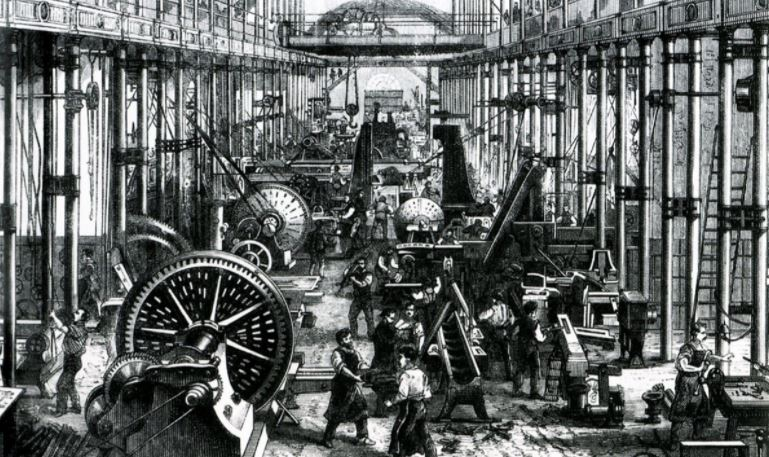
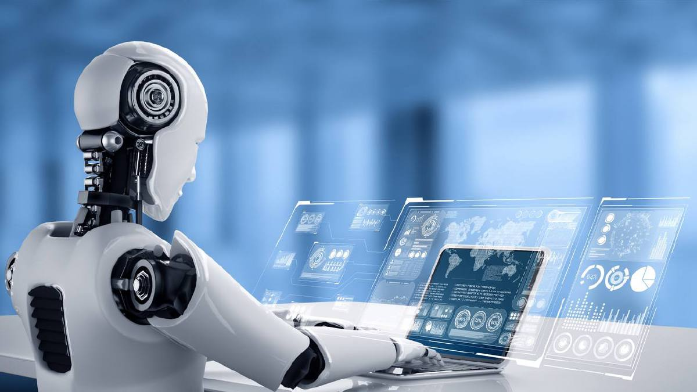

REVOLUSI INDUSTRI
Sejarah Singkat Revolusi Industri
Revolusi Industri terjadi pada periode antara tahun 1760-1850 di mana terjadinya perubahan secara besar-besaran di bidang pertanian, manufaktur, pertambangan, transportasi, dan teknologi serta memiliki dampak yang mendalam terhadap kondisi sosial, ekonomi, dan budaya di dunia.

Revolusi Industri 1.0

Revolusi Industri 2.0

Revolusi Industri 3.0
